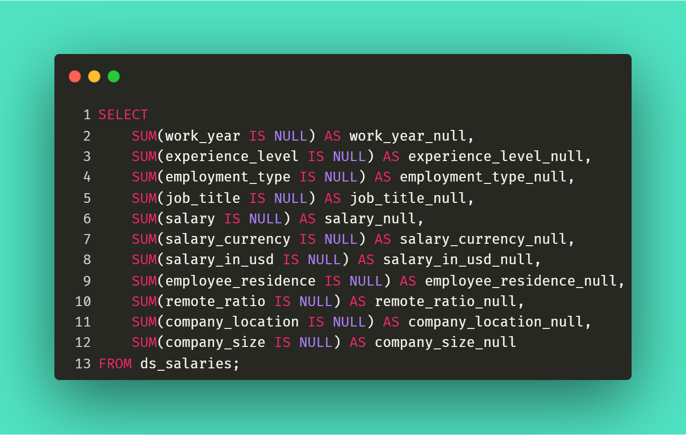
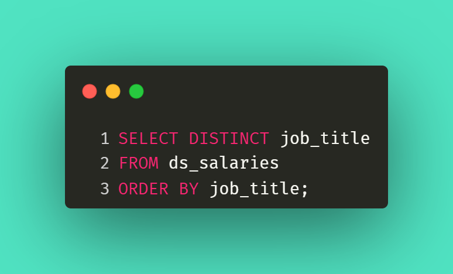
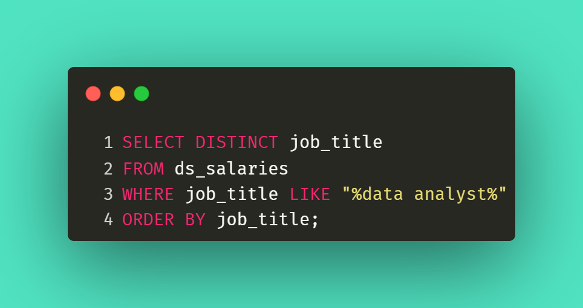
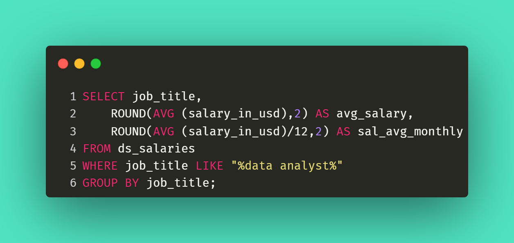
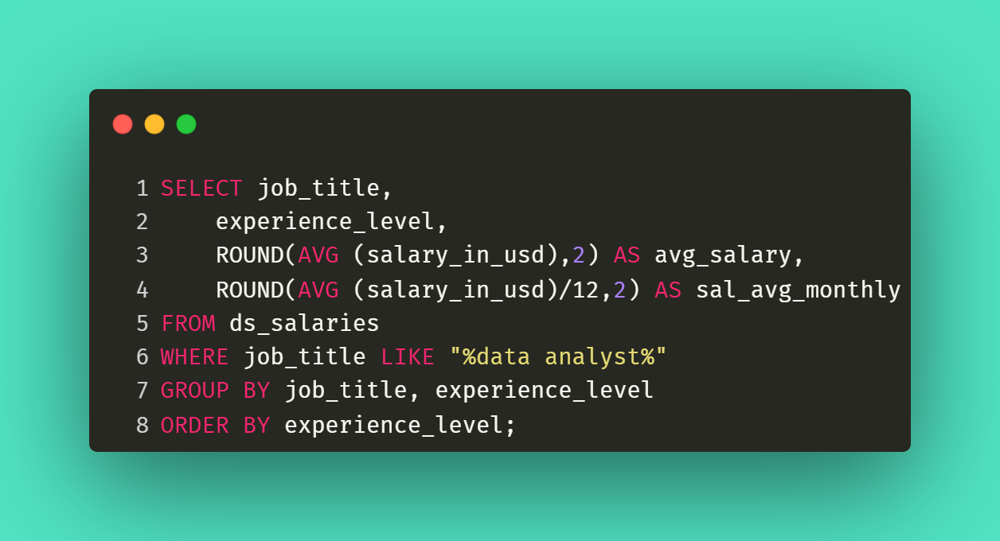
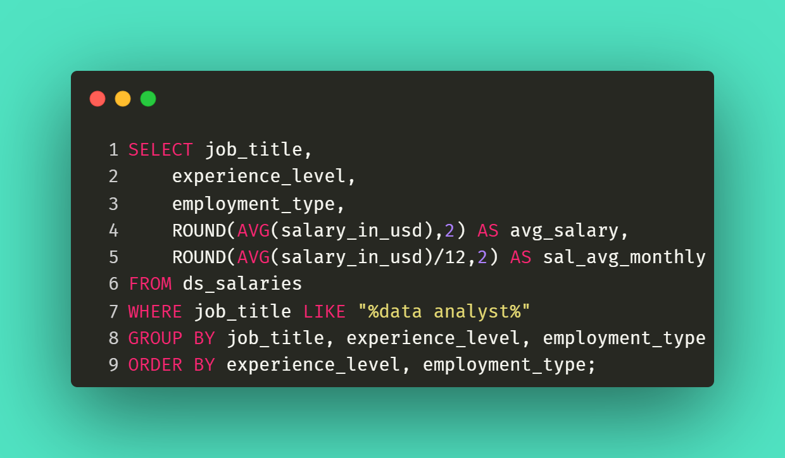
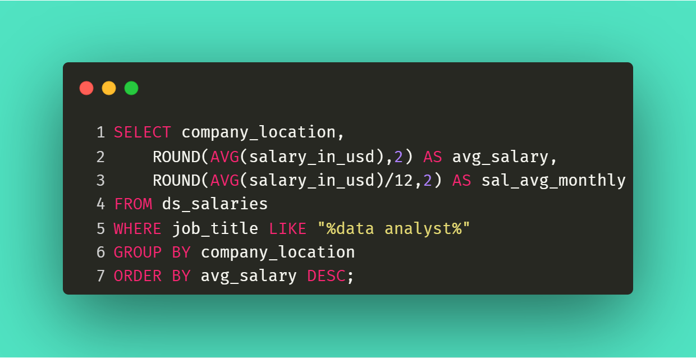
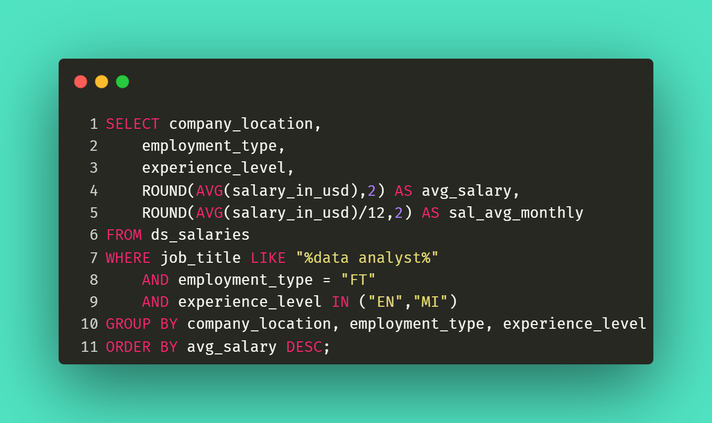
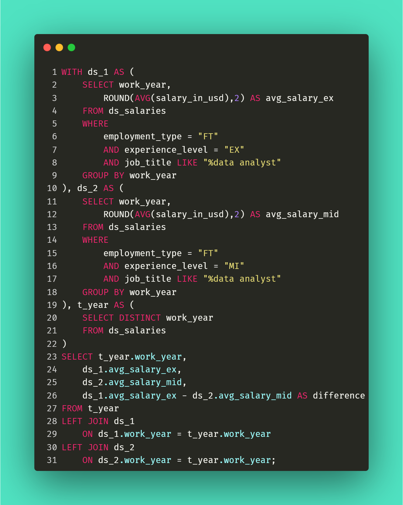

SQL Case Study
Exploratory Data Analysis using MySQL
Project Overview
This case study explores salary trends among Data Analyst related roles using MySQL. The project demonstrates data validation, exploratory analysis, salary comparison, country analysis, and Common Table Expressions (CTE).
Project Scope
Q = Question
Q1 : Dataset Validation
Q2 : Job Exploration
Q3 : Data Analyst Roles
Q4 - Q6 : Salary Analysis
Q7 - Q8 : Salary by Country Analysis
Q9 : CTE Analysis
Dataset
Data Science Salaries
Statistics
Rows : 608
Columns : 12
Job Titles : 50
Years : 2020–2022
Business Questions
Business Questions
- Are there any NULL values in the dataset?
- What job titles are available in the dataset?
- Which job titles are related to Data Analyst roles?
- What is the average salary for Data Analyst-related roles?
- What is the average salary by experience level?
- What is the average salary by experience level and employment type?
- Which countries offer the most attractive salaries for Data Analyst-related roles?
- Which countries offer the most attractive salaries for Data Analyst-related roles for full-time positions at entry to mid-level experience
- Using a Common Table Expression (CTE), determine the year in which the salary growth from mid-level to senior-level positions was the highest among full-time Data Analyst-related roles.
Q1 · Dataset Validation
The dataset is complete and does not contain missing values, making it suitable for further exploratory analysis.
Query

Result

Insight
No missing values were identified, indicating that the dataset is clean and ready for analysis.
Q2 · Job Title Exploration
The dataset includes 50 unique job titles spanning analyst, scientist, engineer, architect, and executive positions.
Query

Result
50
Unique Job Titles
| Job Title |
|---|
| 3D Computer Vision Researcher |
| AI Scientist |
| Analytics Engineer |
| Applied Data Scientist |
| Applied Machine Learning Scientist |
| BI Data Analyst |
| Big Data Architect |
| Big Data Engineer |
| Business Data Analyst |
| Cloud Data Engineer |
Showing 10 of 50 job titles
Insight
Since the dataset includes multiple data professions, Data Analyst-related roles will be identified and selected for subsequent salary analysis.
Q3 · Data Analyst Roles
Nine Data Analyst-related roles were identified and selected for subsequent salary analysis.
Query

Result

Insight
Focusing on Data Analyst-related roles ensures a more targeted and meaningful comparison of salary trends.
Q4 · Average Salary Analysis Across 9 Data Analyst Roles
Financial Data Analyst records the highest average annual salary among the selected Data Analyst-related roles, earning approximately $275,000 per year.
Query

Visualization
Insight
Average salaries vary considerably across Data Analyst-related roles. Financial Data Analysts receive the highest compensation, with an average annual salary of approximately $275,000, equivalent to around $22,917 per month.
Q5 · Average Salary by Experience Level Across 9 Data Analyst Roles
Financial Data Analysts record the highest average annual salary among the selected roles at the Mid-level (MI) experience level.
Query

Visualization
Insight
Salaries generally increase with experience level. Financial Data Analysts at the Mid-level (MI) experience category receive the highest average annual compensation among the selected roles, suggesting a significant premium for specialized analytical expertise in the financial sector.
Q6 · Average Salary by Experience Level and Employment Type Across 9 Data Analyst Roles
Incorporating employment type into the analysis does not alter the ranking of the selected roles. Financial Data Analysts at the Mid-level (MI) and Full-Time category continue to record the highest average annual salary.
Query

Visualization
Insight
Employment type does not contribute additional salary variation in this analysis, as all selected Data Analyst-related roles are classified as Full-Time positions. Therefore, salary trends remain consistent with the experience-level findings.
Q7 · Salary Analysis by Country Across 9 Data Analyst Roles
The United States records the highest average annual salary among the analyzed countries for Data Analyst-related roles.
Query

Visualization
Insight
Salary distribution differs substantially by country, suggesting that geographic location is an important factor influencing compensation opportunities for Data Analysts.
Q8 · Salary by Country (Full-Time, Entry to Mid-Level) Across 9 Data Analyst Roles
The United States continues to offer the highest average annual salary for Full-Time Entry to Mid-Level Data Analyst-related roles, while Canada emerges as the second-highest paying country, replacing Denmark from the previous analysis.
Query

Visualization
Insight
Restricting the analysis to Full-Time and Entry-to-Mid-Level positions alters the country ranking, suggesting that salary competitiveness varies across markets depending on employment type and experience level.
Q9 · CTE Salary Comparison
Average salaries for both Mid-level (MI) and Executive-level (EX) professionals declined from 2021 to 2022. However, the salary gap widened from $41,601 to $51,029 due to a larger decrease in Mid-level salaries.
Query

Visualization
Insights
While compensation levels decreased across both experience groups, Mid-level professionals experienced a sharper decline, resulting in a wider salary gap between Mid-level and Executive-level roles in 2022.